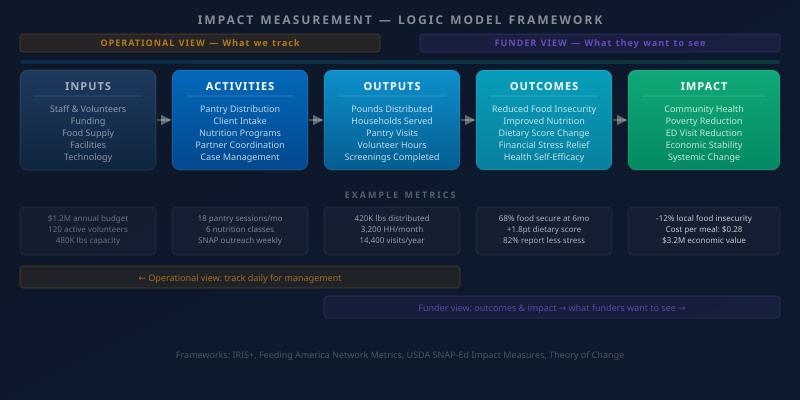

Funders are changing how they evaluate impact — and food banks that still lead with pounds distributed are increasingly finding that number alone is not enough. The shift from output metrics to outcome metrics is not a passing trend in philanthropy. It reflects a genuine demand for evidence that your organization is producing meaningful change in the lives of the people you serve, not just processing volume.
Understanding what different types of funders actually want is the starting point. Government funders, private foundations, and corporate sponsors each approach impact measurement with different frameworks, different questions, and different tolerances for complexity. Effective impact reporting means speaking each of these languages — not just developing one universal metrics package and sending it to everyone.
Output vs. Outcome: Why the Distinction Matters

Outputs describe what your organization does: pounds distributed, households served, volunteer hours logged, pantry visits completed. These numbers are essential for operational management and they provide context for impact claims, but they do not tell the funder what changed as a result of your work. Outcomes describe what changed: a family reduced its level of food insecurity, a diabetic client improved dietary adherence, a senior gained consistent access to nutritious food they could not otherwise afford.
The shift to outcomes is challenging for food banks because outcomes require longitudinal data. You need to know where clients started, track what happened while they were in your programs, and measure where they ended up. This is fundamentally harder than counting pantry visits. But it is also what separates organizations that can credibly claim impact from those that can only claim activity.
What Different Funders Want
Government funders — particularly USDA SNAP-Ed, state human services agencies, and Medicaid waiver programs — want standardized metrics that can be aggregated across grantees and compared to population-level benchmarks. They want to know how your numbers compare to state averages for food insecurity rates, and they want data in specific formats that connect to their reporting systems. The USDA's impact metric frameworks and Feeding America's network-level reporting standards are the most relevant references for this audience.
Private foundations increasingly use outcome frameworks like IRIS+ (published by the Global Impact Investing Network) and often want to see a logic model before they evaluate any specific metric. They want to understand your theory of change — the explicit chain of reasoning that connects your activities to your claimed outcomes — before deciding whether your metrics are measuring the right things. A strong logic model that maps data collection to each stage of your theory of change is more compelling to this audience than a large number.
Corporate funders often want a story they can tell to employees and customers alongside the underlying data. They are interested in emotional resonance as much as statistical rigor. A specific client story supported by aggregate outcome data — with their company's contribution explicitly connected to a measurable result — is more valuable to this audience than a comprehensive impact report. Corporate funders also tend to want engagement metrics: employee volunteers, matching gift participation, and social media reach, alongside community impact measures.
Building a Theory of Change
A theory of change is the explicit documentation of how your programs produce the outcomes you claim. It identifies the problem, describes your intervention, names the assumptions that must hold true for your intervention to work, and maps the chain of causality from your activities to your intended outcomes. It is not a strategic plan or a program description — it is a testable hypothesis about how change happens.
For a food bank, a theory of change might state: households experiencing food insecurity face nutritional deficiencies and financial stress that reduce their capacity to manage other life challenges. By providing consistent access to nutritious food at no cost, we reduce the frequency and severity of food insecurity, which in turn reduces food-related financial stress, improves dietary quality, and creates conditions for improved health and economic stability. Each step in that chain is testable, and your data collection system should be designed to generate evidence on each link.
Connecting Salesforce to Your Theory of Change
The practical implication of a theory of change is that your data collection needs to be designed around your causal chain, not around what is easiest to measure. If your theory of change claims that your programs reduce food insecurity, you need a validated food insecurity screening tool — such as the Hunger Vital Sign two-question screener — administered at intake and at regular intervals. If your theory claims improved dietary quality, you need a dietary assessment tool administered before and after program participation.
In Salesforce, this means building intake and follow-up forms that capture these baseline and follow-up measurements as structured data fields, not free-text notes. It means creating reports that surface pre-post comparisons at the individual and aggregate level. And it means building dashboards that display outcomes progression visually — food security score changes over time, program completion rates, re-enrollment patterns — so that both your team and your funders can see the story your data tells.
The Tension Between Standardization and Local Meaning
One genuine challenge in impact measurement is the tension between using standardized frameworks — which enable benchmarking and funder comparison — and measuring what is most meaningful to your local community. Feeding America's network metrics create national comparability. But a food bank serving primarily undocumented immigrant families, or rural seniors with transportation barriers, may find that the most important indicators of their work's impact are not captured in national frameworks.
The resolution is to build a measurement architecture with two layers: a core set of standardized metrics that satisfy benchmarking requirements, and a supplemental set of locally-defined indicators that capture what matters most in your specific community. Report the standardized core to all funders. Report the supplemental local measures to funders who have shown interest in your specific population or context. Over time, your locally-defined indicators may influence how funders think about measurement in your sector — which is a form of field leadership that sophisticated funders actively value.